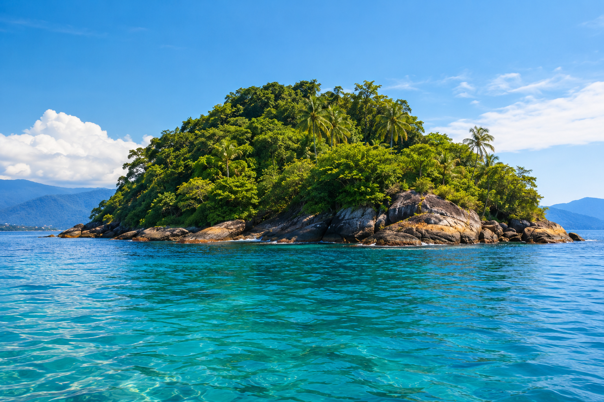
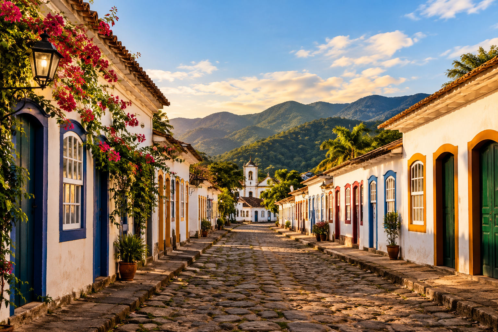
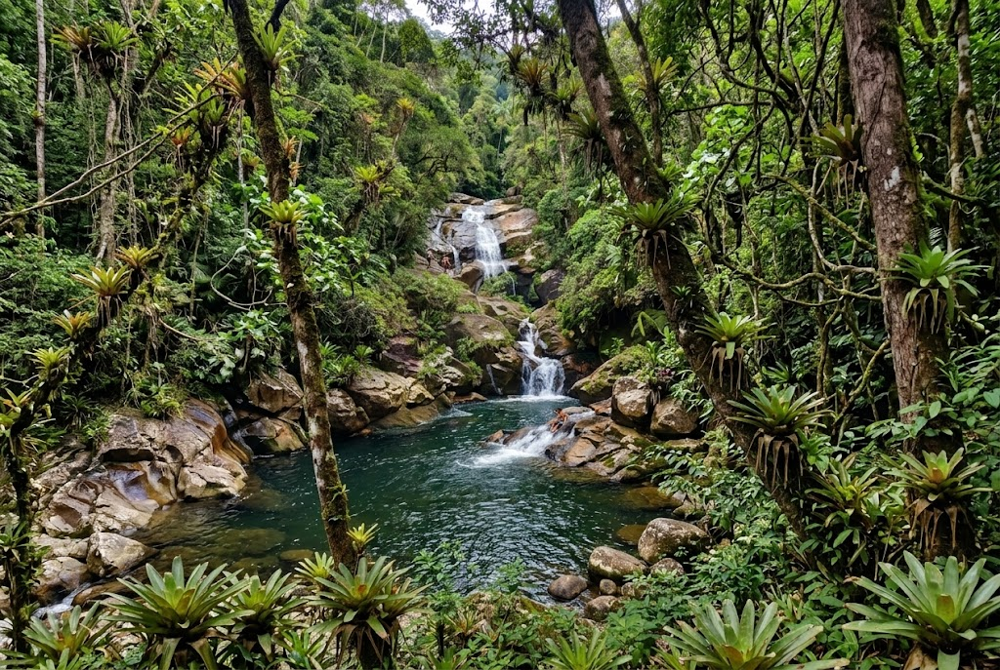
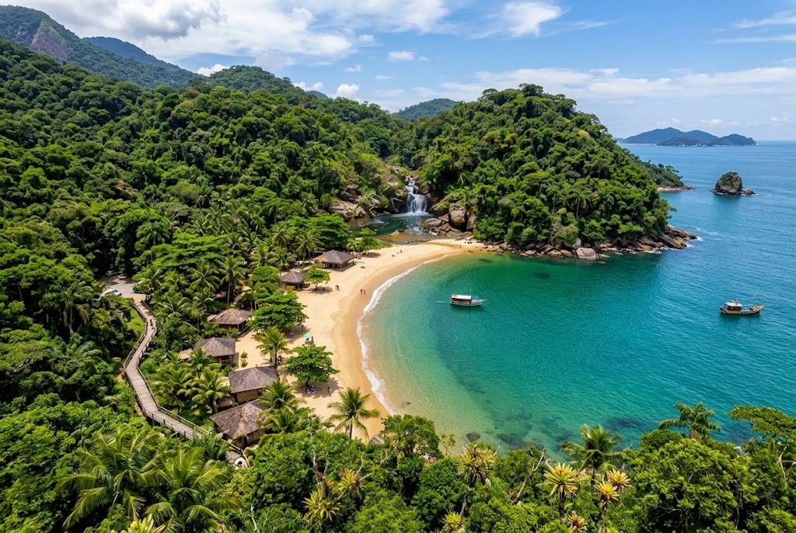

PASSEIOS E ATIVIDADES
Viva experiências
inesquecíveis
Conheça as belezas naturais de Paraty e Região
com passeios que vão ficar para semprre na sua memória

Ilha Paraty
⭐ 4,9 (238 avaliações)
Passeio de Barco • Meio dia
A partir de R$120,00
Ver detalhes

City Tour Histórico
⭐ 4,8 (312 avaliações)
Cultura • 2 horas
A partir de R$90,00
Ver detalhes
Conheça o centro histórico de Paraty, com suas ruas de pedra, casarões coloniais e construções cheias de história. Um passeio perfeito para apreciar a arquitetura e a cultura local.

Cachoeira do Tobogã
⭐ 4,8 (215 avaliações)
Trilha • Ecoturismo • 4 horas
A partir de R$60,00
Ver detalhes
Conheça a famosa Cachoeira do Tobogã em Paraty, onde uma grande pedra lisa forma um escorrega natural até um poço de águas cristalinas. Uma experiência divertida e imperdível em plena Mata Atlântica.

Praia do Sono
⭐ 4,7 (108 avaliações)
Barco + Trilha • Dia inteiro
A partir de R$150,00
Ver detalhes
Descubra a paradisíaca Praia do Sono em Paraty, famosa pelas suas areias claras, águas transparentes e vegetação exuberante da Mata Atlântica. Um refúgio perfeito para relaxar e desfrutar da natureza.
Rota da Cachaça
⭐ 4,8 (143 avaliações)
Cultura e Tradição • 3 horas
A partir de R$ 90,00
Ver detalhes
Descubra a tradição dos alambiques artesanais de Paraty, conhecendo a história da produção local e os costumes que fazem parte da cultura da região.
Vila de Trindade
⭐ 4,9 (196 avaliações)
Praias e Natureza • Meio dia
A partir de R$ 100,00
Ver detalhes
Explore a Vila de Trindade, em Paraty, conhecendo suas belas praias, águas cristalinas e paisagens cercadas pela Mata Atlântica. Aproveite o contato com a natureza em um dos destinos mais encantadores da região.